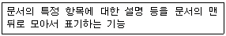
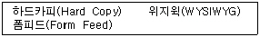
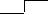
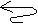
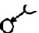
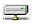

워드프로세서-2급(폐지) (2005-05-22 기출문제)
1과목: 워드프로세서 용어 및 기능
1. 다음 중 공문서 작성의 일반사항과 거리가 먼 것은?
- 문서는 쉽고 간명하게 한글로 작성하되 특별한 사유가 있는 경우를 제외하고는 한글맞춤법에 따라 가로로 쓴다.
- 문서에 쓰는 숫자는 특별한 사유가 있는 경우를 제외하고는 아라비아 숫자로 쓴다.
- 문서의 작성에 쓰이는 용지의 크기는 특별한 사유가 있는 경우를 제외하고는 가로 210mm, 세로 297mm로 한다.
- 시간의 표기에서 시, 분의 표기는 12시각제에 따라 숫자로 표기하되 시, 분의 글자는 생략하고 그 사이에 쌍점(:)을 찍어 구분한다
(정답률: 76%)

2. 다음 중 탭(Tab) 기능에 대한 설명으로 옳지 않은 것은?
- 탭의 추가, 지우기 등의 기능이 있다.
- 특정위치로 커서를 신속하게 이동시킨다.
- 워드프로세서상에서 탭 간격을 따로 설정할 수 있다.
- 설정된 탭은 삭제할 수 없다.
(정답률: 75%)
3. 다음 중 '♣'나 '⊙'와 같은 특수 문자에 대한 설명으로 옳지 않은 것은?
- 자판에는 나타나 있지 않으므로 특수 문자표(혹은 코드표)를 이용하여 입력한다.
- 특수문자는 모두 1바이트로 구성되어 있다.
- 한글 윈도 운영체제에서 한글 자음을 입력한 후 [한자] 키를 누르면 특수문자가 나타나므로 이를 이용하여 입력할 수 있다.
- 문서에 포함되어 있는 특수문자는 찾기 기능을 이용하여 찾을 수 있다.
(정답률: 81%)
4. 다음 중 CPU와 주기억장치 사이에 위치하며 두 장치 사이의 속도 차이를 극복하기 위한 저장장치는?
- Cache Memory
- Buffer Memory
- Virtual Memory
- Flash Memory
(정답률: 83%)
5. 다음 중 출력할 자료를 일정한 공간에 저장해 두었다가 프린터가 출력 가능한 시기에 출력할 수 있도록 해 주는 기능은?
- 홈 베이스(Home Base)
- 워드 랩(Word Wrap)
- 스풀링(Spooling)
- 피치(Pitch) 조절
(정답률: 85%)
6. 워드프로세서에서 우리 학교의 이름을 치고 한자변환를 했더니 원하지 않는 다른 한자로 바뀌었다. 이 한자 단어를 자주 사용할 경우 어떻게 하는 것이 가장 바람직한가?
- 그냥 한글자씩 입력받는다.
- 상용구에 한글로 학교이름을 등록한다.
- 한자사전에 새 단어로 학교이름을 등록한다.
- 한자사전에 있는 해당 단어를 모두 지운다.
(정답률: 80%)
7. 다음 중 많은 사람들에게 동일한 내용의 초대장을 보낼 때 사용하는 기능으로 가장 적당한 것은?
- 매크로
- 포메터
- 메일 머지
- 하이퍼텍스트
(정답률: 89%)
8. 다음 중 워드프로세서에서 [Shift] 키에 대한 설명으로 옳지 않은 것은?
- 문단을 강제로 분리할 때 사용한다.
- 한글 입력시 윗 글자를 입력할 때 사용한다.
- 영어 입력시 대/소문자를 전환하여 입력할 때 사용한다.
- 다른 키와 조합하여 특수한 기능을 수행한다.
(정답률: 79%)
9. 다음 중에서 토글키가 아닌 것은?
- [Insert]
- [Caps Lock]
- [Num Lock]
- [Ctrl]
(정답률: 88%)
10. 다음 중 공문서의 표준 규격(1종)으로 가장 많이 사용되고 있는 용지는?
- B4
- A4
- A3
- B3
(정답률: 92%)
11. 다음 중에서 나머지 셋과 성격이 다른 키는?
- [Alt]
- [Ctrl]
- [Shift]
- [Caps Lock]
(정답률: 92%)
12. 다음 중 “WP 시험문제” 라는 글자를 KS X 10⑤-1 유니코드로 표현하려면 몇 Byte가 필요한가?
- 7
- 11
- 13
- 14
(정답률: 67%)
13. 다음 중 화면표시 형식에서 그래픽(Graphic) 모드에 대한 설명으로 옳은 것은?
- 텍스트 모드에 비해 인쇄속도가 빠르다.
- 텍스트 모드에 비해 기억공간을 많이 차지한다.
- 인쇄 전에는 출력 결과를 예측하기 어렵다.
- 텍스트 모드에 비해 처리속도가 빠르다.
(정답률: 66%)
14. 다음 중 문서에 포함된 표나 그림 등에 제목 또는 설명을 붙이는 기능을 무엇이라고 하는가?
- 첨자(Script)
- 포맷(Format)
- 캡션(Caption)
- 프롬프트(Prompt)
(정답률: 92%)
15. 다음 중 컴퓨터 등 정보처리 능력을 가진 장치에 의하여 전자적인 형태로 작성, 송·수신 또는 저장된 문서를 무엇이라고 하는가?
- 대외문서
- 대내문서
- 전자문서
- 사문서
(정답률: 91%)
16. 다음 중 아래 설명에 알맞은 용어는?

- 각주
- 미주
- 머리말
- 꼬리말
(정답률: 74%)
17. 다음 보기의 용어들과 관련이 가장 깊은 것은?

- 입력기능
- 저장기능
- 편집기능
- 인쇄기능
(정답률: 80%)
18. 다음 중에서 전자문서의 효력발생시기는?
- 수신자의 컴퓨터에 파일로 기록된 때
- 수신자가 내용을 확인한 순간부터
- 수신자에게 발신한 날로부터 5일 후
- 수신자가 내용의 요지를 이해한 순간부터
(정답률: 75%)
19. 다음 중에서 줄(행) 단위의 이동이 발생하지 않는 교정부호는?


(정답률: 87%)
20. 다음 중에서 원래 문장의 글자 수에 변동을 주지 않는 교정부호는?

(정답률: 87%)
2과목: PC 운영 체제
21. 한글 Windows 98에서 휴지통 내의 삭제한 파일을 다시는 복원할 수 없도록 하는 방법으로 가장 적절한 것은?
- 휴지통 내의 파일을 다시 삭제한다.
- 휴지통 내의 파일 이름을 다른 것으로 바꾼다.
- 휴지통 내의 파일에 대해 복원 명령을 실행한다.
- 휴지통 내의 파일에 대해 새로 고침 명령을 실행한다.
(정답률: 79%)
22. 한글 Windows 98에서 지원되는 기능으로 웹 정보를 바탕화면에 표시할 수 있도록 하는 기능은?
- Gateway
- Active Desktop
- Protocol
- TCP/IP
(정답률: 49%)
23. 다음 중에서 인터넷 관련 캐시 파일, 휴지통의 파일, 임시 파일 등을 삭제하여 하드디스크의 공간을 늘리는 역할을 하는 것은?
- 디스크 정리
- 디스크 공간 늘림
- 디스크 조각 모음
- 백업
(정답률: 61%)
24. 한글 Windows 98에서 [탐색기]를 실행하는 방법으로 옳지 않은 것은?
- 바탕화면의 [내 컴퓨터] 아이콘에서 [Alt]키를 누른 채로 더블 클릭한다.
- [시작] 단추에서 마우스의 오른쪽 버튼을 눌러 [탐색] 항목을 선택한다.
- 바탕화면의 [내 컴퓨터] 아이콘에서 마우스의 오른쪽 버튼을 눌러 [탐색] 항목을 선택한다.
- [시작] 단추의 [프로그램] 항목에서 [Windows 탐색기]를 클릭한다.
(정답률: 63%)
25. 한글 Windows 98에서 프로그램 간의 자료 공유를 지원하는 기능은?
- OLE 기능
- Plug and Play 기능
- Multi-User 기능
- OnNow 기능
(정답률: 56%)
26. 한글 Windows 98에서 하드디스크의 파일 시스템에 관한 논리적 오류를 점검하는데 사용되는 시스템 도구는?
- 디스크 검사
- 디스크 공간 늘림
- 디스크 정리
- 디스크 백업
(정답률: 79%)
27. 한글 Windows 98에서 디스크의 단편화를 제거하여 처리 속도를 향상시켜 주는 프로그램은 무엇인가?
- 오류검사
- 디스크 검사
- 백업
- 디스크 조각 모음
(정답률: 78%)
28. 한글 Windows 98에서 사용자가 모니터의 종류, 화면 해상도, 글꼴 크기를 지정하고자 할 경우에 [디스플레이 등록 정보] 창에서 선택해야 하는 탭은?
- 설정
- 효과
- 화면 보호기
- 화면 배색
(정답률: 67%)
29. 한글 Windows 98에서 사용하는 아이콘들 중에서 네트워크에 연결되어 있는 드라이브를 나타내는 아이콘은?

(정답률: 81%)
30. 한글 Windows 98의 [프린터] 창에서 특정 프린터를 더블 클릭하여 여는 경우 어떠한 결과가 발생하는가?
- 해당 프린터의 등록정보가 표시된다.
- 해당 프린터의 작업 목록 창을 표시한다.
- 해당 프린터를 다시 설치한다.
- 해당 프린터를 사용 가능한 상태로 변경한다.
(정답률: 52%)
31. 한글 Windows 98에서 [시작] 메뉴의 [문서]에 있는 목록이 실제로 저장되어 있는 위치는?
- C:\Program Files
- C:\Windows\System
- C:\Work
- C:\Windows\Recent
(정답률: 42%)
32. 한글 Windows 98에서 [네트워크 등록정보] 창의 [컴퓨터 확인] 탭을 이용하여 알 수 있는 정보가 아닌 것은?
- 컴퓨터 이름
- 사용자 정보
- 작업 그룹
- 컴퓨터 설명
(정답률: 61%)
33. 한글 Windows 98의 [시스템 도구]에 있는 [디스크 조각 모음]을 수행하는 궁극적인 목적은?
- 디스크의 가용공간이 넓어진다.
- 파일 접근 속도가 향상된다.
- 파일들의 크기가 일정해진다.
- 바이러스를 검사한다.
(정답률: 62%)
34. 한글 Windows 98이 시작될 때 나는 소리를 변경하려고 할 때, 가장 관련이 깊은 [제어판]의 항목은?
- 멀티미디어
- 프로그램 추가/제거
- 사운드
- 암호
(정답률: 82%)
35. 한글 Windows 98에서 [제어판]의 [시스템]을 선택한 후에 [장치 관리자] 탭에서 할 수 있는 작업은?
- 응용 프로그램 추가
- 하드웨어 제거
- 시동 디스크 작성
- Windows 구성 요소 설치
(정답률: 40%)
36. 한글 Wondows 98에서 [찾기] 기능에 대한 설명으로 옳지 않은 것은?
- 파일 크기를 지정해서 찾을 수 있다.
- 파일 이름 중 확장자만을 지정하여 찾을 수 있다.
- 현재 날짜 이전 또는 기간을 지정하여 찾을 수 있다.
- 파일의 읽기 전용에 관한 속성을 지정하여 찾을 수 있다.
(정답률: 55%)
37. 한글 Windows 98을 설치하고자 한다. 다음 중 설치에 필요한 것과 가장 거리가 먼 것은 무엇인가?
- 부팅 디스켓
- Windows CD 원본
- 각종 장치 드라이버
- 각종 응용 프로그램
(정답률: 46%)
38. 한글 Windows 98의 탐색기에서 [보기]-[자세히] 메뉴를 선택하여 얻을 수 있는 파일에 대한 정보가 아닌 것은?
- 이름
- 종류
- 크기
- 작성자
(정답률: 82%)
39. 한글 Windows 98에서 간단한 그림을 그리려고 할 때 적당한 프로그램은?
- 워드패드
- 계산기
- 그림판
- 메모장
(정답률: 91%)
40. 한글 Windows 98에서 제공되는 [도움말]과 관련된 설명으로 옳지 않은 것은?
- [도움말]의 내용은 프린터로 인쇄할 수 없기 때문에 화면으로만 이용한다.
- 분류 항목별로 찾아보려면 [목차] 탭을 이용한다.
- 색인 항목의 목록을 이용하려면 [색인] 탭을 선택한다.
- [도움말]에 포함된 키워드나 구문으로 검색하려면 [검색] 탭을 이용한다.
(정답률: 60%)
3과목: PC 기본 상식
41. 다음 응용 프로그램과 응용 분야가 제대로 짝지어지지 않은 것은?
- ACCESS - 데이터베이스
- 한글 97 - 문서작성
- EXCEL - 멀티미디어 제작
- POWERPOINT - 프리젠테이션
(정답률: 69%)
42. 사운드나 비디오와 같은 멀티미디어 요소를 다운로드 받으면서 동시에 재생할 수 있는 기술을 의미하는 말은?
- 스트리밍
- 버퍼링
- 오버레이
- 샘플링
(정답률: 81%)
43. 다음 중 멀티미디어 압축 기술이 아닌 것은?
- JPEG
- AVI
- MPEG
- TMP
(정답률: 57%)
44. 다음 중 자원의 공유를 목적으로 회사, 학교, 연구소 등의 구내에 설치되어 있는 다수의 컴퓨터를 네트워크로 구성할 때 이용하는 정보 통신망은 어느 것인가?
- VAN
- ISDN
- LAN
- WAN
(정답률: 82%)
45. 다음 중에서 백신 프로그램의 기능이라고 할 수 없는 것은?
- 바이러스 발견(Virus Hunter)
- 파일 백업(File Backup)
- 피해 복구(Damage Control)
- 바이러스 예방(Virus Prevention)
(정답률: 62%)
46. 다음 중 PDA에 대한 설명으로 옳지 않은 것은?
- 휴대가 간편한 소형의 정보통신 기기이다.
- 펜 입력장치를 많이 사용한다.
- 데스크탑에서 사용하는 운영체제를 그대로 사용한다.
- 이동통신 기능을 지원하는 방향으로 발전하고 있다.
(정답률: 71%)
47. 다음 중 네트워크의 OSI(Open System Interconnection) 모델을 구성하는 계층이 아닌 것은?
- 프로그램 계층(Program Layer)
- 네트워크 계층(Network Layer)
- 물리 계층(Physical Layer)
- 데이터 링크 계층(Data Link Layer)
(정답률: 64%)
48. 사용자가 어떤 일의 처리를 컴퓨터에 의뢰하고 나서 그 결과를 얻을 때까지 소요되는 시간을 무엇이라 하는가?
- 자료처리 시간(Data Processing Time)
- 유휴 시간(Idle Time)
- 반응 시간(Response Time)
- 턴 어라운드 타임(Turn Around Time)
(정답률: 79%)
49. 다음 중 한글 Windows 98에서 기본적으로 지원하여 별도의 플러그인 없이 사용할 수 있는 비디오 파일은?
- 보기삭제
- MOV
- MPEG
- WAV
(정답률: 49%)
50. 컴퓨터 시스템 또는 CPU의 처리율을 나타내는 MIPS에 대하여 올바르게 설명한 것은 무엇인가?
- 일초에 처리되는 명령어 수를 백만단위로 나타낸 것이다.
- 일초에 처리되는 명령어 수를 일억단위로 나타낸 것이다.
- 일분에 처리되는 명령어 수를 백만단위로 나타낸 것이다.
- 일분에 처리되는 명령어 수를 일억단위로 나타낸 것이다.
(정답률: 73%)
51. 다음 중 네트워크 내부에 있는 호스트를 외부의 침입으로부터 보호하기 위하여 사용하는 것은?
- TCP/IP
- Firewall
- FTP
- TELNET
(정답률: 77%)
52. 다음은 CD-ROM을 인터페이스(Interface) 방식에 따라 분류한 것이다. 해당되지 않는 것은?
- AT-BUS 방식
- IDE 방식
- CDMA 방식
- SCSI 방식
(정답률: 46%)
53. 다음 중 인터프리터(Interpreter)에 대한 설명으로 옳은 것은?
- FORTRAN, COBOL 등의 고급언어로 작성한 프로그램을 기계어로 번역해 준다.
- 목적코드(Object Code)를 시스템 라이브러리를 참조해서 실행 가능하게 한다.
- 프로그램을 한 라인씩 읽고 바로 해석하여 실행한다.
- BASIC, LISP 등이 있으며 목적 프로그램을 생성시킨다.
(정답률: 57%)
54. 다음 중 시스템 규모에 따른 컴퓨터 시스템의 분류가 아닌 것은?
- 슈퍼 컴퓨터(Super Computer)
- 메인 프레임 컴퓨터(Main Frame Computer)
- 하이브리드 컴퓨터(Hybrid Computer)
- 미니 컴퓨터(Mini Computer)
(정답률: 68%)
55. 다음 중 불의의 사고에 의해 데이터가 상실되는 것을 대비하여 중요한 데이터를 보조기억장치에 복사해 두는 것을 무엇이라 하는가?
- 백업(Backup)
- 복원(Restore)
- 디스크 파킹(Parking)
- 포맷(Format)
(정답률: 81%)
56. 다음 중에서 보안 위협의 형태가 아닌 것은?
- 바이러스(Virus)
- 트로이 목마(Trojan Horse)
- 인증(Authentication)
- 웜(Worm)
(정답률: 88%)
57. 다음 중 CPU 내에 위치하며 실제로 사칙연산과 논리연산 등을 수행하는 장치는?
- 부호기
- 명령 해독기
- ALU
- 명령 레지스터
(정답률: 47%)
58. 다음 중 보조기억장치에 대한 설명으로 거리가 먼 것은?
- 저장된 정보를 반영구적으로 보관할 수 있다.
- 현재 사용하지 않는 프로그램이나 데이터를 보조기억장치에 기억시켜 두었다가 필요할 때 다시 사용할 수 있다.
- 주기억장치에 비해 읽는 속도는 느리나 저렴한 가격에 많은 정보를 저장시킬 수 있다.
- 보조기억장치에 저장된 정보를 실행시키면 주기억장치를 거치지 않고 바로 실행된다.
(정답률: 58%)
59. 개별 물건에 극소형 전자태그가 삽입되어 있어 언제 어디서나 자유롭게 네트워크를 통해서 컴퓨터에 접속할 수 있는 환경을 의미하는 용어는 어느 것인가?
- 광속 상거래(CALS)
- 제닉스(XENIX)
- 유비쿼터스(Ubiquitous)
- 인트라넷(Intranet)
(정답률: 82%)
60. 다음 중에서 PC 통신을 하려고 할때 반드시 필요로 하지 않는 도구는?
- 모뎀 또는 LAN 카드
- CD-ROM
- 통신용 소프트웨어
- PC
(정답률: 78%)